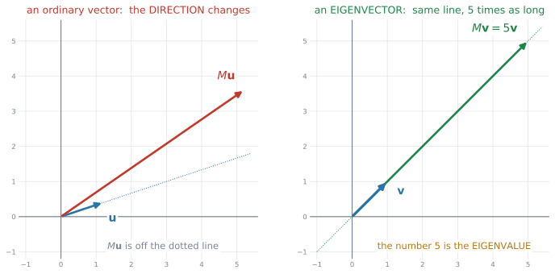
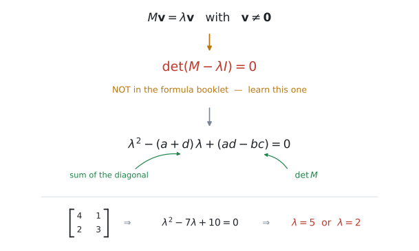
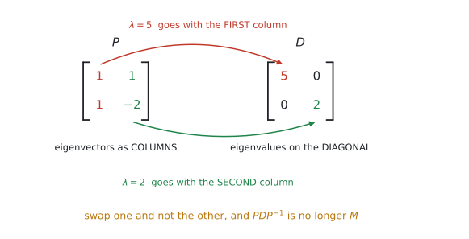
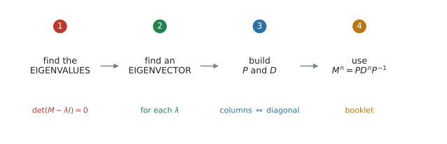
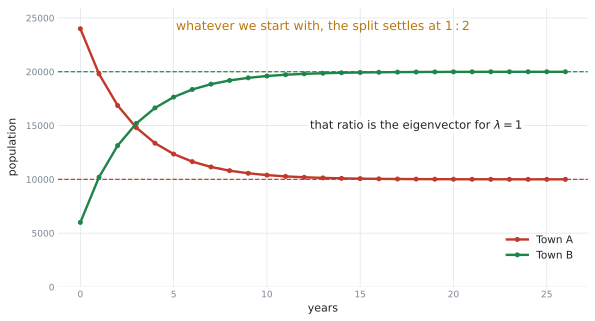

AHL 1.15 — Eigenvalues and eigenvectors（固有値と固有ベクトル）
- eigenvector（固有ベクトル）とは、行列を掛けても向きが変わらないベクトルだと言える。
- characteristic equation \(\det(M - \lambda I) = 0\) を書ける（公式集に載っていません）。
- \(2 \times 2\) の eigenvalue（固有値）を、手でも電卓でも出せる。
- それぞれの \(\lambda\) に対する eigenvector を求められる。答えは1つに決まりません。
- eigenvector を列に並べて \(P\)、eigenvalue を対角に並べて \(D\) を作れる。順番をそろえる。
- \(M^{n} = PD^{n}P^{-1}\) を使って、行列の累乗を求められる。
- \(2\) つの町の人口移動などで、長い目で見たときどうなるかを説明できる。
公式集の AHL 1.15 の欄にあるのは、次の \(1\) つだけです。
\[ M^{n} = PD^{n}P^{-1} \tag{1}\]
where \(P\) is the matrix of eigenvectors and \(D\) is the diagonal matrix of eigenvalues
そして、いちばん大事な式は載っていません。
\[ \det(M - \lambda I) = 0 \tag{2}\]
公式集のどこにも印刷されていません。この項目で唯一、覚えなければならない式です。
シラバスがはっきり限定しています。
Students will only be expected to perform calculations by hand and with technology for \(2 \times 2\) matrices.
\(3 \times 3\) の固有値を手で出す、ということはありません。
また diagonalization（対角化）も、
restricted to the case where there are distinct real eigenvalues
つまり \(\lambda\) が \(2\) つとも実数で、しかも異なる場合だけです。重解や複素数は出ません。
The idea
1. 向きが変わらないベクトルを探します
行列を掛けると、ふつうベクトルは向きも長さも変わります。 ところが、向きだけは変わらない特別なベクトルがあります。

図 1 の左では、\(M\mathbf{u}\) が点線からずれています。向きが変わってしまったわけです。
右では、\(M\mathbf{v}\) が同じ点線の上に乗ったままです。長さが \(5\) 倍になっただけ。この \(\mathbf{v}\) が eigenvector、\(5\) が eigenvalue です。
\[ M\mathbf{v} = \lambda\mathbf{v}, \qquad \mathbf{v} \neq \mathbf{0} \tag{3}\]
\(\mathbf{v} \neq \mathbf{0}\) という条件
\(\mathbf{v} = \mathbf{0}\) なら \(M\mathbf{0} = \lambda\mathbf{0}\) はどんな \(\lambda\) でも成り立ってしまいます。それでは意味がないので、\(\mathbf{0}\) は eigenvector に含めません。
この条件が、次の characteristic equation を生みます。
2. characteristic equation
\(\lambda\) を先に見つけます。

式 3 を移項すると \(M\mathbf{v} - \lambda\mathbf{v} = \mathbf{0}\)、つまり
\[ (M - \lambda I)\mathbf{v} = \mathbf{0} \]
もし \((M - \lambda I)\) に逆行列があったら、両辺に掛けて \(\mathbf{v} = \mathbf{0}\) になってしまいます。それは認めないので、逆行列があってはいけません。
逆行列がないのは \(\det = 0\) のときですから、式 2 が出ます。
実際に展開すると
\(M = \begin{pmatrix} a & b \\ c & d \end{pmatrix}\) のとき、
\[ M - \lambda I = \begin{pmatrix} a - \lambda & b \\ c & d - \lambda \end{pmatrix} \]
\(2\times2\) の determinant をとって \(0\) とおきます。
\[ (a-\lambda)(d-\lambda) - bc = 0 \]
\[ \lambda^{2} - (a+d)\lambda + (ad - bc) = 0 \tag{4}\]
これが characteristic polynomial（固有多項式）です。
- \(\lambda\) の係数 … 対角の和（\(a + d\)）に \(-\) を付けたもの
- 定数項 … \(\det M\)（\(ad - bc\)）
\(M = \begin{pmatrix} 4 & 1 \\ 2 & 3 \end{pmatrix}\) なら、対角の和が \(7\)、\(\det M = 12 - 2 = 10\)。
\[ \lambda^{2} - 7\lambda + 10 = 0 \ \Rightarrow \ (\lambda-5)(\lambda-2) = 0 \]
\(\lambda = 5\) または \(\lambda = 2\) です。展開せずに書けるようになると速いです。
3. eigenvector の求め方
\(\lambda\) が出たら、式 3 にもどして \(\mathbf{v}\) を探します。\(\lambda = 5\) で試します。
\[ M - 5I = \begin{pmatrix} 4-5 & 1 \\ 2 & 3-5 \end{pmatrix} = \begin{pmatrix} -1 & 1 \\ 2 & -2 \end{pmatrix} \]
\((M - 5I)\mathbf{v} = \mathbf{0}\) を成分で書くと、
\[ -x + y = 0, \qquad 2x - 2y = 0 \]
\(2\)本の式が、同じことを言っています
\(2\) 本目は \(1\) 本目を \(-2\) 倍しただけです。どちらも \(y = x\) と言っています。
そうなるように \(\lambda\) を選んだ、というのがこの項目の仕組みです。\(\det(M - \lambda I) = 0\) は、まさに「\(2\) 本の式が重なる」ための条件でした。
\(2\) 本目を見て「解けない」と思わないでください。\(1\) 本使えば十分です。
\(y = x\) を満たすベクトルなら何でもよいので、いちばん簡単なものを選びます。
\[ \mathbf{v} = \begin{pmatrix} 1 \\ 1 \end{pmatrix} \]
答えは1つに決まりません
eigenvector は向きの話なので、何倍しても eigenvector のままです。
\[ M\begin{pmatrix} 2 \\ 2 \end{pmatrix} = \begin{pmatrix} 10 \\ 10 \end{pmatrix} = 5\begin{pmatrix} 2 \\ 2 \end{pmatrix} \ \checkmark \]
答案にはいちばん簡単な整数を書いてください。採点では、あなたの選んだ \(\mathbf{v}\) がそのまま使われます。
\(\lambda = 2\) も同じようにします。
\[ M - 2I = \begin{pmatrix} 2 & 1 \\ 2 & 1 \end{pmatrix} \ \Rightarrow \ 2x + y = 0 \ \Rightarrow \ y = -2x \]
\[ \mathbf{v} = \begin{pmatrix} 1 \\ -2 \end{pmatrix} \]
4. \(P\) と \(D\) を作ります

- \(P\) … eigenvector を列に並べる
- \(D\) … eigenvalue を対角に並べる
\[ P = \begin{pmatrix} 1 & 1 \\ 1 & -2 \end{pmatrix}, \qquad D = \begin{pmatrix} 5 & 0 \\ 0 & 2 \end{pmatrix} \]
\(P\) の\(1\) 列目が \(\lambda = 5\) の eigenvector なら、\(D\) の\(1\) 番目も \(5\) です。
片方だけ入れかえると、\(PDP^{-1}\) はもう \(M\) になりません。書いたら \(1\) 度、目で対応を確かめてください。
\[ M = PDP^{-1} \tag{5}\]
これが diagonalization（対角化）です。
5. 累乗が、一気に計算できます
式 1 が公式集の式です。

\(D\) は対角行列なので、累乗がそのままです。
\[ D^{n} = \begin{pmatrix} 5^{n} & 0 \\ 0 & 2^{n} \end{pmatrix} \]
\(0\) が邪魔をしないので、\(\begin{pmatrix} 5 & 0 \\ 0 & 2 \end{pmatrix}^{3} = \begin{pmatrix} 125 & 0 \\ 0 & 8 \end{pmatrix}\) になります。
\(M\) を \(3\) 回掛けるより、はるかに楽です。 \(n = 20\) でも同じ手間で出せます。
6. 長い目で見ると、どうなるか
シラバスが挙げている使い道です。
Applications, for example movement of population between two towns, predator/prey models.

図 5 は、毎年 A 町の \(20\%\) が B 町へ、B 町の \(10\%\) が A 町へ移る場合です。
\[ T = \begin{pmatrix} 0.8 & 0.1 \\ 0.2 & 0.9 \end{pmatrix} \]
固有値は \(\lambda = 1\) と \(\lambda = 0.7\) です。
\(\lambda = 1\) は「掛けても変わらない」という意味です。そこに達したら、もう動きません。
もう一方は \(0.7\) で、\(0.7^{n}\) は \(n\) が大きくなると \(0\) に近づきます。その成分は消えていきます。
だから、どこから始めても \(\lambda = 1\) の eigenvector の比に落ち着きます。ここでは \(\begin{pmatrix} 1 \\ 2 \end{pmatrix}\)、つまり \(1 : 2\) です。
このしくみは AHL 4.19 の transition matrices（推移行列）と Markov chains、そして AHL 5.17 の coupled differential equations につながります。シラバスにも Link to: として書かれています。
Why it works
なぜ \(M^{n} = PD^{n}P^{-1}\) になるのか。ここだけ説明します。
式 5 より \(M = PDP^{-1}\) です。これを \(2\) 乗してみます。
\[ M^{2} = (PDP^{-1})(PDP^{-1}) \]
結合法則が使えるので、真ん中に注目してください。
\[ M^{2} = PD\,(P^{-1}P)\,DP^{-1} \]
\(P^{-1}P = I\) ですから、真ん中が消えます。
\[ M^{2} = PD\,I\,DP^{-1} = PD^{2}P^{-1} \]
\(3\) 乗でも同じことが起こります。
\[ M^{3} = PD\,(P^{-1}P)\,D\,(P^{-1}P)\,DP^{-1} = PD^{3}P^{-1} \]
間にはさまった \(P^{-1}P\) が、次々と消えていく。 これが \(M^{n} = PD^{n}P^{-1}\) の中身です。
\(P\) と \(P^{-1}\) は両端に \(1\) つずつ残るだけで、まん中には \(D\) が \(n\) 個並びます。だから対角行列の累乗さえ計算できればよい、ということになります。
Worked examples
問題文は英語です。意味が理解できなかったら、問題文の下の「日本語訳」を開いてください。解説は日本語です。
例題 1 Let \(M = \begin{pmatrix} 4 & 1 \\ 2 & 3 \end{pmatrix}\).
(a) Write down the characteristic equation of \(M\).
(b) Hence find the eigenvalues of \(M\).
日本語訳
\(M = \begin{pmatrix} 4 & 1 \\ 2 & 3 \end{pmatrix}\) とします。
(a) \(M\) の characteristic equation を書きなさい。
(b) これを使って、\(M\) の eigenvalue を求めなさい。
(a) 式 2 に入れます。\(M - \lambda I\) は、対角から \(\lambda\) を引くだけです。
\[ \det\begin{pmatrix} 4-\lambda & 1 \\ 2 & 3-\lambda \end{pmatrix} = 0 \]
\[ (4-\lambda)(3-\lambda) - (1)(2) = 0 \]
\[ 12 - 7\lambda + \lambda^{2} - 2 = 0 \ \Rightarrow \ \lambda^{2} - 7\lambda + 10 = 0 \]
(b) 因数分解します。
\[ (\lambda - 5)(\lambda - 2) = 0 \ \Rightarrow \ \lambda = 5 \ \text{or} \ \lambda = 2 \]
対角の和は \(4 + 3 = 7\) ✓（\(\lambda\) の係数）
\(\det M = 4(3) - 1(2) = 10\) ✓（定数項）
展開した式と一致しました。 展開でミスをしていないか、これで確かめられます。
(a) \(\det(M - \lambda I) = 0\)
\((4-\lambda)(3-\lambda) - 2 = 0\), so \(\lambda^{2} - 7\lambda + 10 = 0\)
(b) \((\lambda-5)(\lambda-2) = 0\), so \(\lambda = 5\) or \(\lambda = 2\)
例題 2 For the matrix \(M = \begin{pmatrix} 4 & 1 \\ 2 & 3 \end{pmatrix}\), the eigenvalues are \(5\) and \(2\). Find an eigenvector corresponding to each eigenvalue.
日本語訳
行列 \(M = \begin{pmatrix} 4 & 1 \\ 2 & 3 \end{pmatrix}\) の eigenvalue は \(5\) と \(2\) です。それぞれの eigenvalue に対応する eigenvector を \(1\) つずつ求めなさい。
\(\lambda = 5\) のとき。 対角から \(5\) を引きます。
\[ M - 5I = \begin{pmatrix} -1 & 1 \\ 2 & -2 \end{pmatrix} \]
\(1\) 行目から \(-x + y = 0\)、つまり \(y = x\)。（\(2\) 行目も同じことを言っています。）
\[ \mathbf{v}_{1} = \begin{pmatrix} 1 \\ 1 \end{pmatrix} \]
\(\lambda = 2\) のとき。
\[ M - 2I = \begin{pmatrix} 2 & 1 \\ 2 & 1 \end{pmatrix} \]
\(1\) 行目から \(2x + y = 0\)、つまり \(y = -2x\)。
\[ \mathbf{v}_{2} = \begin{pmatrix} 1 \\ -2 \end{pmatrix} \]
検算。 \(M\mathbf{v}_{1} = \begin{pmatrix} 4+1 \\ 2+3 \end{pmatrix} = \begin{pmatrix} 5 \\ 5 \end{pmatrix} = 5\mathbf{v}_{1}\) ✓
\(M\mathbf{v}_{2} = \begin{pmatrix} 4-2 \\ 2-6 \end{pmatrix} = \begin{pmatrix} 2 \\ -4 \end{pmatrix} = 2\mathbf{v}_{2}\) ✓
\(y = -2x\) が出たら、\(x = 1\) とおいて \(y = -2\)。それだけです。
分数が出るときは、分母を払ってください。 \(y = \frac{2}{3}x\) なら \(x = 3\)、\(y = 2\) として \(\begin{pmatrix} 3 \\ 2 \end{pmatrix}\) とします。何倍しても正解なので、整数にしておくほうが、あとの計算が楽になります。
\(\lambda = 5\): \((M - 5I)\mathbf{v} = \mathbf{0}\) gives \(-x + y = 0\), so \(\mathbf{v}_{1} = \begin{pmatrix} 1 \\ 1 \end{pmatrix}\)
\(\lambda = 2\): \((M - 2I)\mathbf{v} = \mathbf{0}\) gives \(2x + y = 0\), so \(\mathbf{v}_{2} = \begin{pmatrix} 1 \\ -2 \end{pmatrix}\)
例題 3 The matrix \(M = \begin{pmatrix} 4 & 1 \\ 2 & 3 \end{pmatrix}\) has eigenvalues \(5\) and \(2\), with eigenvectors \(\begin{pmatrix} 1 \\ 1 \end{pmatrix}\) and \(\begin{pmatrix} 1 \\ -2 \end{pmatrix}\).
(a) Write down matrices \(P\) and \(D\) such that \(M = PDP^{-1}\).
(b) Find \(P^{-1}\).
日本語訳
行列 \(M = \begin{pmatrix} 4 & 1 \\ 2 & 3 \end{pmatrix}\) の eigenvalue は \(5\) と \(2\) で、eigenvector はそれぞれ \(\begin{pmatrix} 1 \\ 1 \end{pmatrix}\)、\(\begin{pmatrix} 1 \\ -2 \end{pmatrix}\) です。
(a) \(M = PDP^{-1}\) となる行列 \(P\) と \(D\) を書きなさい。
(b) \(P^{-1}\) を求めなさい。
(a) eigenvector を列に、eigenvalue を対角に。順番をそろえます。
\[ P = \begin{pmatrix} 1 & 1 \\ 1 & -2 \end{pmatrix}, \qquad D = \begin{pmatrix} 5 & 0 \\ 0 & 2 \end{pmatrix} \]
(b) 公式集の逆行列の式を使います。
\[ \det P = 1(-2) - 1(1) = -3 \]
\[ P^{-1} = \frac{1}{-3}\begin{pmatrix} -2 & -1 \\ -1 & 1 \end{pmatrix} = \frac{1}{3}\begin{pmatrix} 2 & 1 \\ 1 & -1 \end{pmatrix} \]
もし \(P = \begin{pmatrix} 1 & 1 \\ -2 & 1 \end{pmatrix}\)（列を入れかえた）としながら \(D\) をそのままにすると、\(PDP^{-1}\) は別の行列になります。
\(1\) 列目は \(\lambda = 5\)、\(2\) 列目は \(\lambda = 2\)。 書いたら指で対応を追ってください。
(a) \(P = \begin{pmatrix} 1 & 1 \\ 1 & -2 \end{pmatrix}\), \(D = \begin{pmatrix} 5 & 0 \\ 0 & 2 \end{pmatrix}\)
(b) \(\det P = -3\); \(P^{-1} = \dfrac{1}{3}\begin{pmatrix} 2 & 1 \\ 1 & -1 \end{pmatrix}\)
例題 4 Let \(M = \begin{pmatrix} 4 & 1 \\ 2 & 3 \end{pmatrix}\), with \(P = \begin{pmatrix} 1 & 1 \\ 1 & -2 \end{pmatrix}\) and \(D = \begin{pmatrix} 5 & 0 \\ 0 & 2 \end{pmatrix}\).
Use the result \(M^{n} = PD^{n}P^{-1}\) to find \(M^{3}\).
日本語訳
\(M = \begin{pmatrix} 4 & 1 \\ 2 & 3 \end{pmatrix}\)、\(P = \begin{pmatrix} 1 & 1 \\ 1 & -2 \end{pmatrix}\)、\(D = \begin{pmatrix} 5 & 0 \\ 0 & 2 \end{pmatrix}\) とします。
\(M^{n} = PD^{n}P^{-1}\) を使って \(M^{3}\) を求めなさい。
まず \(D^{3}\) です。対角の数を \(3\) 乗するだけ。
\[ D^{3} = \begin{pmatrix} 5^{3} & 0 \\ 0 & 2^{3} \end{pmatrix} = \begin{pmatrix} 125 & 0 \\ 0 & 8 \end{pmatrix} \]
次に \(PD^{3}\)。
\[ PD^{3} = \begin{pmatrix} 1 & 1 \\ 1 & -2 \end{pmatrix}\begin{pmatrix} 125 & 0 \\ 0 & 8 \end{pmatrix} = \begin{pmatrix} 125 & 8 \\ 125 & -16 \end{pmatrix} \]
最後に \(P^{-1}\) を掛けます。
\[ M^{3} = \begin{pmatrix} 125 & 8 \\ 125 & -16 \end{pmatrix} \cdot \frac{1}{3}\begin{pmatrix} 2 & 1 \\ 1 & -1 \end{pmatrix} \]
\[ = \frac{1}{3}\begin{pmatrix} 250+8 & 125-8 \\ 250-16 & 125+16 \end{pmatrix} = \frac{1}{3}\begin{pmatrix} 258 & 117 \\ 234 & 141 \end{pmatrix} \]
\[ M^{3} = \begin{pmatrix} 86 & 39 \\ 78 & 47 \end{pmatrix} \]
検算。 \(M^{2} = \begin{pmatrix} 18 & 7 \\ 14 & 11 \end{pmatrix}\)、\(M^{2}M = \begin{pmatrix} 86 & 39 \\ 78 & 47 \end{pmatrix}\) ✓
途中で \(\dfrac{1}{3}\) を分配すると分数だらけになります。掛け算を全部すませてから割ると、整数のまま進められます。
\(258 \div 3 = 86\)、\(117 \div 3 = 39\)、\(234 \div 3 = 78\)、\(141 \div 3 = 47\)。
\(n = 3\) なら \(M\) を \(3\) 回掛けたほうが速いかもしれません。この方法の値打ちは \(n\) が大きいときです。\(M^{20}\) でも、手間はまったく同じです。
\(D^{3} = \begin{pmatrix} 125 & 0 \\ 0 & 8 \end{pmatrix}\)
\(M^{3} = PD^{3}P^{-1} = \begin{pmatrix} 125 & 8 \\ 125 & -16 \end{pmatrix}\cdot\dfrac{1}{3}\begin{pmatrix} 2 & 1 \\ 1 & -1 \end{pmatrix} = \begin{pmatrix} 86 & 39 \\ 78 & 47 \end{pmatrix}\)
例題 5 Each year, \(20\%\) of the people living in town A move to town B, and \(10\%\) of the people living in town B move to town A. The total population of the two towns is \(30\,000\) and stays the same.
The movement is modelled by \(\mathbf{s}_{n+1} = T\mathbf{s}_{n}\), where \(T = \begin{pmatrix} 0.8 & 0.1 \\ 0.2 & 0.9 \end{pmatrix}\).
(a) Initially town A has \(24\,000\) people and town B has \(6000\). Find the populations after one year.
(b) Find the eigenvalues of \(T\).
(c) Find an eigenvector corresponding to \(\lambda = 1\).
(d) Hence find the long-term population of each town, and justify your answer.
日本語訳
毎年、A 町に住む人の \(20\%\) が B 町へ、B 町に住む人の \(10\%\) が A 町へ移ります。\(2\) つの町の人口の合計は \(30\,000\) 人で、変わりません。
この移動は \(\mathbf{s}_{n+1} = T\mathbf{s}_{n}\)（\(T = \begin{pmatrix} 0.8 & 0.1 \\ 0.2 & 0.9 \end{pmatrix}\)）でモデル化されます。
(a) はじめ A 町に \(24\,000\) 人、B 町に \(6000\) 人いました。\(1\) 年後の人口を求めなさい。
(b) \(T\) の eigenvalue を求めなさい。
(c) \(\lambda = 1\) に対応する eigenvector を \(1\) つ求めなさい。
(d) これを使って、長い目で見たときの各町の人口を求め、その理由を書きなさい。
(a) 行列とベクトルの掛け算です。
\[ \begin{pmatrix} 0.8 & 0.1 \\ 0.2 & 0.9 \end{pmatrix}\begin{pmatrix} 24000 \\ 6000 \end{pmatrix} = \begin{pmatrix} 19200 + 600 \\ 4800 + 5400 \end{pmatrix} = \begin{pmatrix} 19800 \\ 10200 \end{pmatrix} \]
A 町 \(19\,800\) 人、B 町 \(10\,200\) 人。（合計はやはり \(30\,000\) です。）
(b) 対角の和と \(\det\) を読みます。和は \(0.8 + 0.9 = 1.7\)、\(\det T = 0.72 - 0.02 = 0.7\)。
\[ \lambda^{2} - 1.7\lambda + 0.7 = 0 \ \Rightarrow \ (\lambda - 1)(\lambda - 0.7) = 0 \]
\[ \lambda = 1 \ \text{or} \ \lambda = 0.7 \]
(c) \(\lambda = 1\) を入れます。
\[ T - I = \begin{pmatrix} -0.2 & 0.1 \\ 0.2 & -0.1 \end{pmatrix} \]
\(1\) 行目から \(-0.2x + 0.1y = 0\)、つまり \(y = 2x\)。
\[ \mathbf{v} = \begin{pmatrix} 1 \\ 2 \end{pmatrix} \]
(d) \(\lambda = 1\) の eigenvector が落ち着き先です。比は \(1 : 2\) なので、\(30\,000\) を \(3\) 等分して分けます。
\[ \text{A} = \frac{1}{3}(30000) = 10000, \qquad \text{B} = \frac{2}{3}(30000) = 20000 \]
試験ではこう書く
In the long term town A has \(10\,000\) people and town B has \(20\,000\). The eigenvalue \(\lambda = 1\) has eigenvector \(\begin{pmatrix} 1 \\ 2 \end{pmatrix}\), so a population in the ratio \(1 : 2\) does not change from year to year. The other eigenvalue is \(0.7\), and \(0.7^{n} \to 0\) as \(n\) increases, so that part of the population distribution dies away.
（意味：長い目で見ると A 町は \(10\,000\) 人、B 町は \(20\,000\) 人になる。\(\lambda = 1\) の eigenvector が \(\begin{pmatrix} 1 \\ 2 \end{pmatrix}\) なので、\(1 : 2\) の人口配分は年が変わっても動かない。もう一方の eigenvalue は \(0.7\) で、\(n\) が大きくなると \(0.7^{n}\) は \(0\) に近づくため、その成分は消えていく。）
justify は、\(2\) つとも書いてください
- \(\lambda = 1\) だから、その配分は変わらない
- もう一方は \(|\lambda| < 1\) だから、\(n\) が増えると消える
\(1\) つ目だけだと「なぜそこに向かうのか」が説明できていません。\(0.7^{n} \to 0\) の一文が要ります。
(a) \(T\begin{pmatrix} 24000 \\ 6000 \end{pmatrix} = \begin{pmatrix} 19800 \\ 10200 \end{pmatrix}\)
(b) \(\lambda^{2} - 1.7\lambda + 0.7 = 0\), so \(\lambda = 1\) or \(\lambda = 0.7\)
(c) \(\lambda = 1\): \(-0.2x + 0.1y = 0\), so \(\mathbf{v} = \begin{pmatrix} 1 \\ 2 \end{pmatrix}\)
(d) Town A: \(10\,000\); town B: \(20\,000\). The eigenvector for \(\lambda = 1\) is \(\begin{pmatrix} 1 \\ 2 \end{pmatrix}\), so the ratio \(1 : 2\) is unchanged each year, and since \(0.7^{n} \to 0\) the other part dies away.
Common errors
公式集に載っていません。\(\det(M - \lambda I) = 0\) は覚えるしかない式です。
この項目で覚える式は、これ \(1\) つだけです。
引くのは対角だけです。
\[ \begin{pmatrix} a-\lambda & b \\ c & d-\lambda \end{pmatrix} \quad \text{であって} \quad \begin{pmatrix} a-\lambda & b-\lambda \\ c-\lambda & d-\lambda \end{pmatrix} \ \text{ではありません} \]
\(\lambda I\) の \(I\) は対角だけが \(1\) だからです。
そうなるように \(\lambda\) を選んでいます。間違いではありません。
\(1\) 本使えば eigenvector は出ます。 そのまま進めてください。
何倍しても eigenvector です。\(\begin{pmatrix} 1 \\ 2 \end{pmatrix}\) でも \(\begin{pmatrix} 2 \\ 4 \end{pmatrix}\) でも正解です。
いちばん簡単な整数を選んでください。
\(P\) の \(1\) 列目が \(\lambda_{1}\) の eigenvector なら、\(D\) の \(1\) 番目も \(\lambda_{1}\) です（図 3）。
片方だけ入れかえると、\(PDP^{-1}\) は \(M\) になりません。
\(P\) は columns（列）です。eigenvector が \(\begin{pmatrix} 1 \\ 2 \end{pmatrix}\) と \(\begin{pmatrix} 3 \\ -1 \end{pmatrix}\) なら、
\[ P = \begin{pmatrix} 1 & 3 \\ 2 & -1 \end{pmatrix} \quad \text{が正しく、} \quad \begin{pmatrix} 1 & 2 \\ 3 & -1 \end{pmatrix} \quad \text{は誤りです} \]
縦に置く。 ベクトルを書いた形のまま、そのまま立てて入れる、と覚えてください。
\(0^{n} = 0\) なので結果は同じですが、\(D\) 全体を \(n\) 回掛けようとして時間を失うのがもったいないです。
対角の数だけ累乗すれば終わりです。
そうはなりません。間の \(P^{-1}P\) が消えるので、\(P\) と \(P^{-1}\) は両端に \(1\) つずつ残るだけです。
\[ M^{n} = PD^{n}P^{-1} \]
公式集の式を、そのまま写してください。
\(\begin{pmatrix} 1 \\ 2 \end{pmatrix}\) は比であって、人数ではありません。
合計に合わせて分ける必要があります。\(30\,000\) なら \(10\,000\) と \(20\,000\) です。
justify で \(\lambda = 1\) しか書かない
「もう一方の \(\lambda\) の \(n\) 乗が \(0\) に近づく」まで書いて、はじめて理由になります。
\(2\) 文書いてください。
Using your GDC (TI-Nspire CX II)
固有値・固有ベクトルは、電卓に専用のコマンドがあります。ただし返ってくる形が答案用ではないので、そこだけ注意が要ります。
1. 行列を入れて、名前を付ける
AHL 1.14 と同じです。
menu → 7: Matrix & Vector → 1: Create → 1: Matrix入れたら ctrl + sto→ に続けて m などと打って保存します。
2. eigenvalue
menu → 7: Matrix & Vector → B: Advanced → 4: EigenvalueseigVl() が出るので、カッコの中に m と入れます。\(\{5, 2\}\) のようにリストで返ってきます。
\(\{5, 2\}\) で返るとは限りません。どちらがどちらか、自分で確かめてください。
対角の和と一致するか（\(5 + 2 = 7\)）で検算できます。
3. eigenvector
menu → 7: Matrix & Vector → B: Advanced → 5: EigenvectorseigVc() に m を入れると、行列が返ってきます。各列が eigenvectorです。
電卓は eigenvector を長さ \(1\) に直して返します。
\[ x_{1}^{2} + x_{2}^{2} = 1 \]
になるように調整されるので、\(\begin{pmatrix} 1 \\ 1 \end{pmatrix}\) は
\[ \begin{pmatrix} 0.707\ldots \\ 0.707\ldots \end{pmatrix} \]
と表示されます。\(\begin{pmatrix} 1 \\ -2 \end{pmatrix}\) なら \(\begin{pmatrix} 0.447\ldots \\ -0.894\ldots \end{pmatrix}\) です。
答案には、これを整数の比に直して書いてください。
\(0.447\) と \(-0.894\) は \(1 : -2\) ですから、\(\begin{pmatrix} 1 \\ -2 \end{pmatrix}\) と書きます。何倍しても正解なので、これで問題ありません。
小さいほうで割ります。 \(\dfrac{0.894}{0.447} = 2\) なので \(1 : -2\)。
符号が両方とも逆（\(-0.447\) と \(0.894\)）で返ることもありますが、それも正解です。\(-1\) 倍しても eigenvector です。
4. 手で出した答えを確かめる
いちばん確実なのは、定義そのものを打つことです。
m*v\(v\) に自分の出した eigenvector を入れて、\(\lambda\) 倍になっていれば合っています。
\(P\) と \(D\) を作ったあとなら、
p*d*p^-1がもとの \(M\) にもどるかどうかで確かめられます。
Find the eigenvalues は電卓の値だけでも認められることがありますが、Show that や Hence が付いていたら、\(\det(M-\lambda I) = 0\) から書く必要があります。
電卓は検算用と考えるのが安全です。
Exercises
各問題に、折りたたみが3つ付いています。日本語訳、解答例（答案用紙に書くべきこと。英語です）、解説（なぜそうなるか。日本語です）。
まず自分で解いて、次に解答例と見くらべてください。解説は、合わなかったときだけ開けば十分です。
1 Find the eigenvalues of \(M = \begin{pmatrix} 5 & 2 \\ 2 & 2 \end{pmatrix}\).
日本語訳
\(M = \begin{pmatrix} 5 & 2 \\ 2 & 2 \end{pmatrix}\) の eigenvalue を求めなさい。
\(\det(M - \lambda I) = (5-\lambda)(2-\lambda) - 4 = 0\)
\(\lambda^{2} - 7\lambda + 6 = 0\)
\((\lambda - 6)(\lambda - 1) = 0\), so \(\lambda = 6\) or \(\lambda = 1\)
対角の和は \(5 + 2 = 7\)、\(\det M = 10 - 4 = 6\)。だから \(\lambda^{2} - 7\lambda + 6 = 0\) と直接書けます。
展開しても同じです。\(10 - 7\lambda + \lambda^{2} - 4 = \lambda^{2} - 7\lambda + 6\) ✓
2 The matrix \(M = \begin{pmatrix} 5 & 2 \\ 2 & 2 \end{pmatrix}\) has eigenvalues \(6\) and \(1\). Find an eigenvector for each.
日本語訳
行列 \(M = \begin{pmatrix} 5 & 2 \\ 2 & 2 \end{pmatrix}\) の eigenvalue は \(6\) と \(1\) です。それぞれの eigenvector を \(1\) つずつ求めなさい。
\(\lambda = 6\): \(M - 6I = \begin{pmatrix} -1 & 2 \\ 2 & -4 \end{pmatrix}\), so \(-x + 2y = 0\) and \(\mathbf{v} = \begin{pmatrix} 2 \\ 1 \end{pmatrix}\)
\(\lambda = 1\): \(M - I = \begin{pmatrix} 4 & 2 \\ 2 & 1 \end{pmatrix}\), so \(4x + 2y = 0\) and \(\mathbf{v} = \begin{pmatrix} 1 \\ -2 \end{pmatrix}\)
\(\lambda = 6\)：\(-x + 2y = 0\) から \(x = 2y\)。\(y = 1\) とおいて \(\begin{pmatrix} 2 \\ 1 \end{pmatrix}\)。
\(\lambda = 1\)：\(4x + 2y = 0\) から \(y = -2x\)。\(x = 1\) とおいて \(\begin{pmatrix} 1 \\ -2 \end{pmatrix}\)。
検算。 \(M\begin{pmatrix} 2 \\ 1 \end{pmatrix} = \begin{pmatrix} 12 \\ 6 \end{pmatrix} = 6\begin{pmatrix} 2 \\ 1 \end{pmatrix}\) ✓
3 Find the eigenvalues and eigenvectors of \(M = \begin{pmatrix} 3 & 1 \\ 0 & 2 \end{pmatrix}\).
日本語訳
\(M = \begin{pmatrix} 3 & 1 \\ 0 & 2 \end{pmatrix}\) の eigenvalue と eigenvector を求めなさい。
\((3-\lambda)(2-\lambda) - 0 = 0\), so \(\lambda^{2} - 5\lambda + 6 = 0\) and \(\lambda = 3\) or \(\lambda = 2\)
\(\lambda = 3\): \(\begin{pmatrix} 0 & 1 \\ 0 & -1 \end{pmatrix}\) gives \(y = 0\), so \(\mathbf{v} = \begin{pmatrix} 1 \\ 0 \end{pmatrix}\)
\(\lambda = 2\): \(\begin{pmatrix} 1 & 1 \\ 0 & 0 \end{pmatrix}\) gives \(x + y = 0\), so \(\mathbf{v} = \begin{pmatrix} 1 \\ -1 \end{pmatrix}\)
左下が \(0\) の行列では、eigenvalue が対角の数そのもの（\(3\) と \(2\)）になります。\(bc = 0\) だからです。
\(\lambda = 3\) のとき \(2\) 行目は \(0 = 0\) で、何も言っていません。\(1\) 行目の \(y = 0\) だけを使います。\(x\) は自由なので \(x = 1\) とおきます。
\(\lambda = 2\) のときは \(2\) 行目が \(0 = 0\)。\(1\) 行目の \(x + y = 0\) を使います。
4 Let \(M = \begin{pmatrix} 1 & 2 \\ 2 & 1 \end{pmatrix}\).
(a) Find the eigenvalues and eigenvectors of \(M\).
(b) Write down matrices \(P\) and \(D\) such that \(M = PDP^{-1}\).
日本語訳
\(M = \begin{pmatrix} 1 & 2 \\ 2 & 1 \end{pmatrix}\) とします。
(a) \(M\) の eigenvalue と eigenvector を求めなさい。
(b) \(M = PDP^{-1}\) となる行列 \(P\) と \(D\) を書きなさい。
(a) \(\lambda^{2} - 2\lambda - 3 = 0\), so \((\lambda-3)(\lambda+1) = 0\) and \(\lambda = 3\) or \(\lambda = -1\)
\(\lambda = 3\): \(\begin{pmatrix} -2 & 2 \\ 2 & -2 \end{pmatrix}\) gives \(y = x\), so \(\mathbf{v} = \begin{pmatrix} 1 \\ 1 \end{pmatrix}\)
\(\lambda = -1\): \(\begin{pmatrix} 2 & 2 \\ 2 & 2 \end{pmatrix}\) gives \(y = -x\), so \(\mathbf{v} = \begin{pmatrix} 1 \\ -1 \end{pmatrix}\)
(b) \(P = \begin{pmatrix} 1 & 1 \\ 1 & -1 \end{pmatrix}\), \(D = \begin{pmatrix} 3 & 0 \\ 0 & -1 \end{pmatrix}\)
対角の和は \(2\)、\(\det M = 1 - 4 = -3\)。だから \(\lambda^{2} - 2\lambda - 3 = 0\)。
\(\lambda\) が負でも構いません。 \(\lambda = -1\) は「向きが逆になって、長さはそのまま」という意味です。
(b) で \(D\) に \(-1\) を書き忘れないように。\(1\) 列目が \(\lambda = 3\) の eigenvector なので、\(D\) の \(1\) 番目も \(3\) です。
5 For \(M = \begin{pmatrix} 1 & 2 \\ 2 & 1 \end{pmatrix}\), use \(M^{n} = PD^{n}P^{-1}\) to find \(M^{3}\).
日本語訳
\(M = \begin{pmatrix} 1 & 2 \\ 2 & 1 \end{pmatrix}\) について、\(M^{n} = PD^{n}P^{-1}\) を使って \(M^{3}\) を求めなさい。
\(P = \begin{pmatrix} 1 & 1 \\ 1 & -1 \end{pmatrix}\), \(D^{3} = \begin{pmatrix} 27 & 0 \\ 0 & -1 \end{pmatrix}\)
\(\det P = -2\), so \(P^{-1} = \dfrac{1}{2}\begin{pmatrix} 1 & 1 \\ 1 & -1 \end{pmatrix}\)
\(PD^{3} = \begin{pmatrix} 27 & -1 \\ 27 & 1 \end{pmatrix}\)
\(M^{3} = \dfrac{1}{2}\begin{pmatrix} 27-1 & 27+1 \\ 27+1 & 27-1 \end{pmatrix} = \begin{pmatrix} 13 & 14 \\ 14 & 13 \end{pmatrix}\)
\((-1)^{3} = -1\) です。符号を落とさないでください。
\(P^{-1}\) は \(\dfrac{1}{-2}\begin{pmatrix} -1 & -1 \\ -1 & 1 \end{pmatrix}\) を整理して \(\dfrac{1}{2}\begin{pmatrix} 1 & 1 \\ 1 & -1 \end{pmatrix}\) になります。
検算。 \(M^{2} = \begin{pmatrix} 5 & 4 \\ 4 & 5 \end{pmatrix}\)、\(M^{2}M = \begin{pmatrix} 13 & 14 \\ 14 & 13 \end{pmatrix}\) ✓
6 Let \(M = \begin{pmatrix} 2 & 4 \\ 1 & 2 \end{pmatrix}\).
(a) Show that \(\det M = 0\).
(b) Find the eigenvalues of \(M\).
(c) State what you notice, and explain why.
日本語訳
\(M = \begin{pmatrix} 2 & 4 \\ 1 & 2 \end{pmatrix}\) とします。
(a) \(\det M = 0\) となることを示しなさい。
(b) \(M\) の eigenvalue を求めなさい。
(c) 気づいたことを述べ、その理由を説明しなさい。
(a) \(\det M = 2(2) - 4(1) = 4 - 4 = 0\)
(b) \(\lambda^{2} - 4\lambda + 0 = 0\), so \(\lambda(\lambda - 4) = 0\) and \(\lambda = 0\) or \(\lambda = 4\)
(c) One eigenvalue is \(0\). The constant term of the characteristic equation is \(\det M\), so if \(\det M = 0\) then \(\lambda = 0\) is a root.
(b) 対角の和は \(4\)、定数項は \(\det M = 0\)。だから \(\lambda^{2} - 4\lambda = 0\) です。
(c) \(\lambda^{2} - (a+d)\lambda + \det M = 0\) に \(\lambda = 0\) を入れると、残るのは \(\det M\) だけ。\(\det M = 0\) なら成り立つ、というのが理由です。
言いかえると、singular な行列は必ず \(\lambda = 0\) を持ちます。
7 Each year \(30\%\) of the customers of shop A move to shop B, and \(20\%\) of the customers of shop B move to shop A. This is modelled by \(T = \begin{pmatrix} 0.7 & 0.2 \\ 0.3 & 0.8 \end{pmatrix}\). There are \(5000\) customers altogether.
(a) Find the eigenvalues of \(T\).
(b) Find an eigenvector corresponding to \(\lambda = 1\).
(c) Find the long-term number of customers of each shop.
日本語訳
毎年、店 A の客の \(30\%\) が店 B へ、店 B の客の \(20\%\) が店 A へ移ります。これは \(T = \begin{pmatrix} 0.7 & 0.2 \\ 0.3 & 0.8 \end{pmatrix}\) でモデル化されます。客は全部で \(5000\) 人です。
(a) \(T\) の eigenvalue を求めなさい。
(b) \(\lambda = 1\) に対応する eigenvector を \(1\) つ求めなさい。
(c) 長い目で見たときの、それぞれの店の客数を求めなさい。
(a) \(\lambda^{2} - 1.5\lambda + 0.5 = 0\), so \((\lambda - 1)(\lambda - 0.5) = 0\) and \(\lambda = 1\) or \(\lambda = 0.5\)
(b) \(T - I = \begin{pmatrix} -0.3 & 0.2 \\ 0.3 & -0.2 \end{pmatrix}\) gives \(3x = 2y\), so \(\mathbf{v} = \begin{pmatrix} 2 \\ 3 \end{pmatrix}\)
(c) Shop A: \(2000\) customers; shop B: \(3000\) customers.
(a) 対角の和は \(1.5\)、\(\det T = 0.56 - 0.06 = 0.5\)。
推移行列では、\(\lambda = 1\) が必ず出ます（各列の和が \(1\) だからです）。出なかったら計算を疑ってください。
(b) \(-0.3x + 0.2y = 0\) から \(3x = 2y\)。\(x = 2\)、\(y = 3\) とおくと整数になります。
(c) 比は \(2 : 3\)。\(5000\) を \(5\) 等分して \(\begin{pmatrix} 2000 \\ 3000 \end{pmatrix}\)。比のまま書かないでください。
8 A \(2 \times 2\) matrix \(M\) has eigenvalue \(3\) with eigenvector \(\begin{pmatrix} 1 \\ 1 \end{pmatrix}\), and eigenvalue \(1\) with eigenvector \(\begin{pmatrix} 1 \\ -1 \end{pmatrix}\).
(a) Write down \(P\) and \(D\).
(b) Hence find \(M\).
日本語訳
ある \(2 \times 2\) 行列 \(M\) は、eigenvalue \(3\) に対する eigenvector が \(\begin{pmatrix} 1 \\ 1 \end{pmatrix}\)、eigenvalue \(1\) に対する eigenvector が \(\begin{pmatrix} 1 \\ -1 \end{pmatrix}\) です。
(a) \(P\) と \(D\) を書きなさい。
(b) これを使って \(M\) を求めなさい。
(a) \(P = \begin{pmatrix} 1 & 1 \\ 1 & -1 \end{pmatrix}\), \(D = \begin{pmatrix} 3 & 0 \\ 0 & 1 \end{pmatrix}\)
(b) \(P^{-1} = \dfrac{1}{2}\begin{pmatrix} 1 & 1 \\ 1 & -1 \end{pmatrix}\)
\(PD = \begin{pmatrix} 3 & 1 \\ 3 & -1 \end{pmatrix}\)
\(M = PDP^{-1} = \dfrac{1}{2}\begin{pmatrix} 4 & 2 \\ 2 & 4 \end{pmatrix} = \begin{pmatrix} 2 & 1 \\ 1 & 2 \end{pmatrix}\)
これまでと逆向きの問題です。\(P\) と \(D\) から \(M\) を組み立てます。
\(\det P = -1 - 1 = -2\)。\(P^{-1} = \dfrac{1}{-2}\begin{pmatrix} -1 & -1 \\ -1 & 1 \end{pmatrix} = \dfrac{1}{2}\begin{pmatrix} 1 & 1 \\ 1 & -1 \end{pmatrix}\)。
検算。 \(M\begin{pmatrix} 1 \\ 1 \end{pmatrix} = \begin{pmatrix} 3 \\ 3 \end{pmatrix} = 3\begin{pmatrix} 1 \\ 1 \end{pmatrix}\) ✓、\(M\begin{pmatrix} 1 \\ -1 \end{pmatrix} = \begin{pmatrix} 1 \\ -1 \end{pmatrix}\) ✓
9 Let \(M = \begin{pmatrix} 4 & 1 \\ 2 & 3 \end{pmatrix}\), with \(P = \begin{pmatrix} 1 & 1 \\ 1 & -2 \end{pmatrix}\) and \(D = \begin{pmatrix} 5 & 0 \\ 0 & 2 \end{pmatrix}\). Find \(M^{5}\).
日本語訳
\(M = \begin{pmatrix} 4 & 1 \\ 2 & 3 \end{pmatrix}\)、\(P = \begin{pmatrix} 1 & 1 \\ 1 & -2 \end{pmatrix}\)、\(D = \begin{pmatrix} 5 & 0 \\ 0 & 2 \end{pmatrix}\) とします。\(M^{5}\) を求めなさい。
\(D^{5} = \begin{pmatrix} 3125 & 0 \\ 0 & 32 \end{pmatrix}\)
\(PD^{5} = \begin{pmatrix} 3125 & 32 \\ 3125 & -64 \end{pmatrix}\)
\(M^{5} = \dfrac{1}{3}\begin{pmatrix} 6282 & 3093 \\ 6186 & 3189 \end{pmatrix} = \begin{pmatrix} 2094 & 1031 \\ 2062 & 1063 \end{pmatrix}\)
\(5^{5} = 3125\)、\(2^{5} = 32\)。ここは電卓を使ってかまいません。
\(P^{-1} = \dfrac{1}{3}\begin{pmatrix} 2 & 1 \\ 1 & -1 \end{pmatrix}\) です（例題3と同じ）。
\(\dfrac{1}{3}\) は最後まで外に出したままにします。\(6282 \div 3 = 2094\)。
この大きさになると、\(M\) を \(5\) 回掛けるよりこちらのほうが速くて確実です。
10 Each year \(10\%\) of the birds nesting on island A move to island B, and \(15\%\) of the birds on island B move to island A. This is modelled by \(T = \begin{pmatrix} 0.9 & 0.15 \\ 0.1 & 0.85 \end{pmatrix}\). There are \(40\,000\) birds altogether.
(a) Show that \(\lambda = 1\) is an eigenvalue of \(T\).
(b) Find the long-term number of birds on each island.
(c) Justify your answer to part (b).
日本語訳
毎年、島 A に巣を作る鳥の \(10\%\) が島 B へ、島 B の鳥の \(15\%\) が島 A へ移ります。これは \(T = \begin{pmatrix} 0.9 & 0.15 \\ 0.1 & 0.85 \end{pmatrix}\) でモデル化されます。鳥は全部で \(40\,000\) 羽です。
(a) \(\lambda = 1\) が \(T\) の eigenvalue であることを示しなさい。
(b) 長い目で見たときの、それぞれの島の鳥の数を求めなさい。
(c) (b) の答えの理由を書きなさい。
(a) \(\lambda^{2} - 1.75\lambda + 0.75 = 0\)
\((\lambda - 1)(\lambda - 0.75) = 0\), so \(\lambda = 1\) is an eigenvalue (the other is \(0.75\)).
(b) \(T - I = \begin{pmatrix} -0.1 & 0.15 \\ 0.1 & -0.15 \end{pmatrix}\) gives \(2x = 3y\), so \(\mathbf{v} = \begin{pmatrix} 3 \\ 2 \end{pmatrix}\)
Island A: \(\dfrac{3}{5}(40\,000) = 24\,000\); island B: \(\dfrac{2}{5}(40\,000) = 16\,000\)
(c) The eigenvector for \(\lambda = 1\) is \(\begin{pmatrix} 3 \\ 2 \end{pmatrix}\), so a population in the ratio \(3 : 2\) is unchanged each year. The other eigenvalue is \(0.75\), and \(0.75^{n} \to 0\) as \(n\) increases, so any other part of the distribution dies away.
(a) 対角の和は \(1.75\)、\(\det T = 0.765 - 0.015 = 0.75\)。
Show that なので、characteristic equation を書いて因数分解するところまで必要です。「\(\lambda = 1\) です」だけでは点になりません。
(b) \(-0.1x + 0.15y = 0\) の両辺を \(20\) 倍すると \(-2x + 3y = 0\)、つまり \(2x = 3y\)。\(x = 3\)、\(y = 2\)。
比は \(3 : 2\) なので \(5\) 等分して \(24\,000\) と \(16\,000\)。
(c) \(2\) 文とも書いてください。\(\lambda = 1\) の話だけでは、なぜそこに向かうのかが説明できていません。